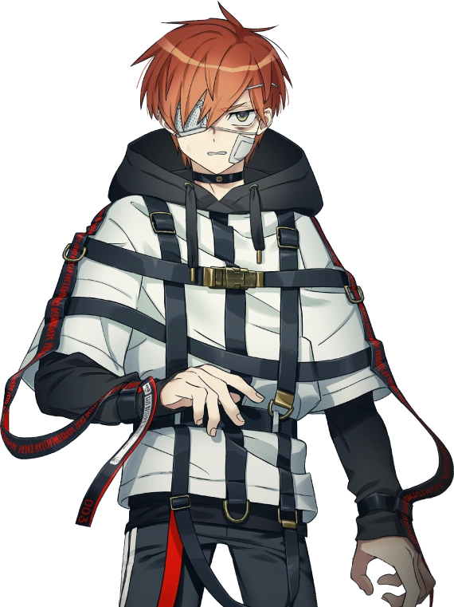
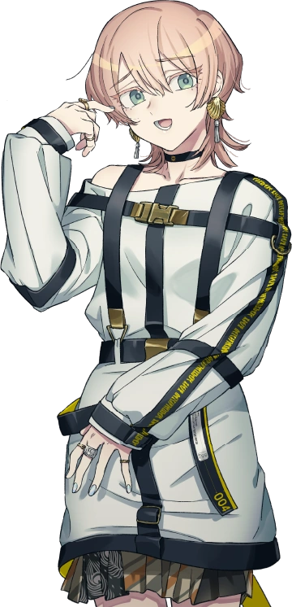
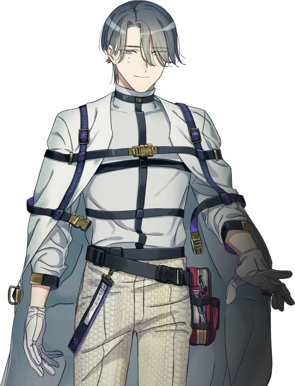
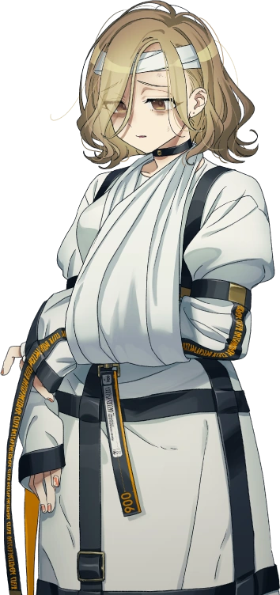
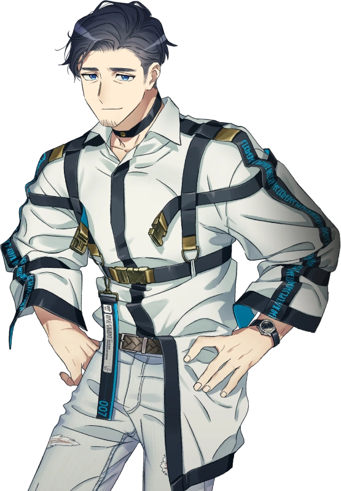
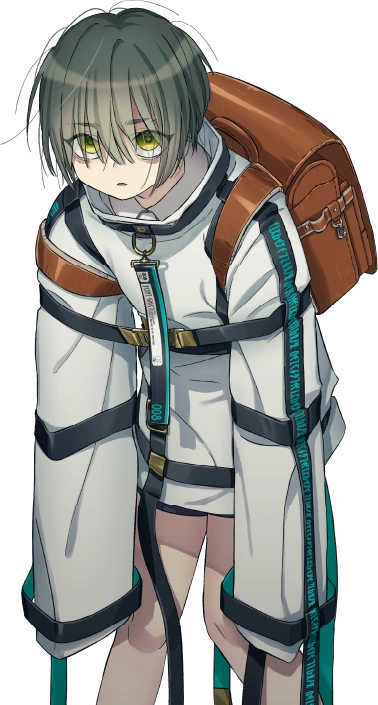
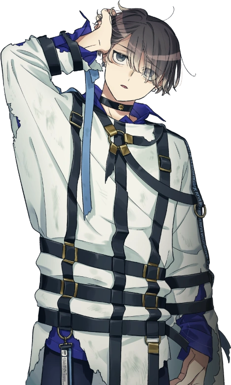
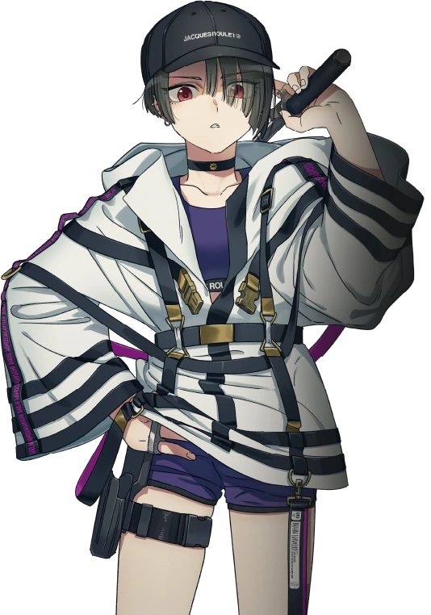

002 — THE BEGINNING: YUNO’S BOREDOM
This is basically confirmed by Yuno several times, but Yuno isn’t doing anything she’s doing out of necessity. She’s from a well off family, and she was simply bored.
This is how she starts out Umbilical. She’s just sitting on her staircase, being bored, not doing anything. She gets a lot more of a spark in her eyes once she starts going on her app.
THE SHIFT: YUNO’S WORK
Yuno uses some kind of app to put herself out in the world. This is where she appears in various colored outfits with pink and red borders surrounding her. Presumably, this results in some kind of work for her.
In Umbilical, after she posts these photos, we see presents start lining the stairs that she sits on. In Tear Drop, she receives money in a far more obvious way.
Because of this, I think it’s pretty safe to say that Yuno is some kind of sugar baby/sex worker. She gets into relationships where she exchanges sex for presents and money.
I think that, at first, she’s unsure of herself in the new landscape, as indicated by the early Umbilical lyrics “I’m still not used to feeling this way / I can’t get you out of my head.” However, she still sees it as a win-win situation. The first lyric of Tear Drop, “the wanted wanting the wanter,” explains this. Yuno, the one who is wanted, also wants the one who wants her; as such, being together is a mutually beneficial situation in her mind.
THE REPETITION: DATES
Yuno seems to go on dates in four main outfits: white, purple, green and yellow.
The “purple” is a little weird, but they roughly match the balloon colors in Umbilical, along with the heartbeat. As I stated in my Trial 1 theory, I still believe that the existence of the heart in Yuno’s balloon represents the baby’s heartbeat, and that this means that she conceived her aborted child early. Thus, I think that this all happens on a fairly short time frame. (This would also check out with the fact that Yuno is currently 18, and I’d assume that she probably wouldn’t be allowed on these sorts of apps without lying for very long before that?)
These date colors are shown in Umbilical. However, most of them appear again in Tear Drop, but with a decidedly different feeling behind them.
While Umbilical Yuno is attempting to seem like the perfect, happy girl, Yuno in Tear Drop shows the less desirable sides of her situations. She doesn’t pretend in the scenes we see in Tear Drop; it’s what she’s like once her clients leave.
The only exception here to the one that doesn’t have a Tear Drop equivalent is Yuno’s white outfit
For some reason, there isn’t an image of this one in Tear Drop. My best explanation is that, as I said in my original Yuno theory, I think that this Yuno is “blank” Yuno. It’s her in her most basic state, without pretending or her apathy or anything. It’s a blank slate Yuno, who still has innocence, but isn’t pretending.
White Yuno and Lingerie Yuno are scene interacting a lot in Tear Drop. I think it’s because these are two parts of Yuno how she actually is. The Lingerie Yuno is how she sees herself: someone apathetic who isn’t afraid to speak out. However, I think that White Yuno is her, too; that’s the her who wants connection and love, and who wants to provide for herself and the people she cares about. Hence, I think White Yuno and Lingerie Yuno’s relationship shows Yuno’s relationship to herself, and therefore her self love.
THE ESCALATION: YUNO’S ABORTION
Yuno’s line of work definitely carries risk for pregnancy, especially if Yuno wasn’t taking precautions to avoid it. She does, however, seem to take pregnancy tests that come up negative, based on these windows in Tear Drop. Or, they could be birth control pills, maybe…?
In any case, something happened and Yuno “messed up”/”found out,” as stated in Umbilical. The staircases merge, and Yuno is aware that she’s pregnant. The staircase breaking seems to imply her abortion. Additionally, in her second audio drama, Absolute Zero, Yuno outright confirms her abortion. She literally says that an abortion was the result of a lot of compensated dating, and that she does consider it to be murder.
At the end of Umbilical, Yuno turns back to three staircases in her blank White Yuno form. Whether it’s the same three as before (purple, green, yellow) or new clients (as potentially indicated by the lack of presents on the staircase), I think it’s safe to say that she’s going back to more “compensated dating,” as she puts it.
THE ENDING: YUNO IN MILGRAM
That’s the ending of what got Yuno into Milgram, but there’s more in Tear Drop where she’s talking directly to us. This heavily involves the rose colored glasses, which we first see on this rabbit plushie.
We also see Yuno through the rose colored glasses ourselves for a bit at the beginning of the second verse
I think that this is leaning into the rose colored glasses saying, meaning that we’re seeing Yuno through a lens that is more favorable than reality. It’s unrealistic, and Yuno takes it off for the Tear Drop MV. She’s done pretending; she wants to be real.
However, by the end of the MV, just stealing them away from us isn’t enough for her. Yuno completely shatters them.
Honestly, throughout this entire scene, she seems really happy, and I feel happy for her. I’m glad that she doesn’t feel like she needs to live a lie anymore. If it takes coming here to Milgram to help her realize that, then maybe it’s a good thing. However…
The ending image makes me uncomfortable due to my earlier theorizing. It looks like the same jacket that White Yuno gave her earlier. It’s showing that she has her warm, and she looks happy, but if I’m right that White Yuno represents her self love… where’d she go?
White Yuno is Yuno in her purest form, innocent and loving. It’s essential that White Yuno is there for Lingerie Yuno, because without her Lingerie Yuno becomes overly cold and bitter. While she may be unrealistic, White Yuno is essential for Yuno’s wellbeing. But, now that she’s broken the rose colored glasses, White Yuno, along with all the others, is gone.
I think that this means that the Yuno we see in Milgram is essentially completely Lingerie Yuno: bitter, apathetic, but completely real. Without the her that shows her optimism and hope as well, though, she seems pretty miserable.
And now, a summary of my theory.
Yuno is bored and begins to work in the field of “compensated dating,” receiving presents and money for her affection and going on dates. She adopts different personas (purple, green, yellow) to appease and represent her different dating selves, but the her in white represents her in her purest form. Conversely, in lingerie she’s at her most truthful, but also her most bitter.
This is basically confirmed by Yuno several times, but Yuno isn’t doing anything she’s doing out of necessity. She’s from a well off family, and she was simply bored.
This is how she starts out Umbilical. She’s just sitting on her staircase, being bored, not doing anything. She gets a lot more of a spark in her eyes once she starts going on her app.
THE SHIFT: YUNO’S WORK
Yuno uses some kind of app to put herself out in the world. This is where she appears in various colored outfits with pink and red borders surrounding her. Presumably, this results in some kind of work for her.
In Umbilical, after she posts these photos, we see presents start lining the stairs that she sits on. In Tear Drop, she receives money in a far more obvious way.
Because of this, I think it’s pretty safe to say that Yuno is some kind of sugar baby/sex worker. She gets into relationships where she exchanges sex for presents and money.
I think that, at first, she’s unsure of herself in the new landscape, as indicated by the early Umbilical lyrics “I’m still not used to feeling this way / I can’t get you out of my head.” However, she still sees it as a win-win situation. The first lyric of Tear Drop, “the wanted wanting the wanter,” explains this. Yuno, the one who is wanted, also wants the one who wants her; as such, being together is a mutually beneficial situation in her mind.
THE REPETITION: DATES
Yuno seems to go on dates in four main outfits: white, purple, green and yellow.
The “purple” is a little weird, but they roughly match the balloon colors in Umbilical, along with the heartbeat. As I stated in my Trial 1 theory, I still believe that the existence of the heart in Yuno’s balloon represents the baby’s heartbeat, and that this means that she conceived her aborted child early. Thus, I think that this all happens on a fairly short time frame. (This would also check out with the fact that Yuno is currently 18, and I’d assume that she probably wouldn’t be allowed on these sorts of apps without lying for very long before that?)
These date colors are shown in Umbilical. However, most of them appear again in Tear Drop, but with a decidedly different feeling behind them.
While Umbilical Yuno is attempting to seem like the perfect, happy girl, Yuno in Tear Drop shows the less desirable sides of her situations. She doesn’t pretend in the scenes we see in Tear Drop; it’s what she’s like once her clients leave.
The only exception here to the one that doesn’t have a Tear Drop equivalent is Yuno’s white outfit
For some reason, there isn’t an image of this one in Tear Drop. My best explanation is that, as I said in my original Yuno theory, I think that this Yuno is “blank” Yuno. It’s her in her most basic state, without pretending or her apathy or anything. It’s a blank slate Yuno, who still has innocence, but isn’t pretending. The closest she has to a Tear Drop scene around the sequence of these images is this image of her with lingerie Yuno
White Yuno and Lingerie Yuno are scene interacting a lot in Tear Drop. I think it’s because these are two parts of Yuno how she actually is. The Lingerie Yuno is how she sees herself: someone apathetic who isn’t afraid to speak out. However, I think that White Yuno is her, too; that’s the her who wants connection and love, and who wants to provide for herself and the people she cares about. Hence, I think White Yuno and Lingerie Yuno’s relationship shows Yuno’s relationship to herself, and therefore her self love.
THE ESCALATION: YUNO’S ABORTION
Yuno’s line of work definitely carries risk for pregnancy, especially if Yuno wasn’t taking precautions to avoid it. She does, however, seem to take pregnancy tests that come up negative, based on these windows in Tear Drop. Or, they could be birth control pills, maybe…?
In any case, something happened and Yuno “messed up”/”found out,” as stated in Umbilical. The staircases merge, and Yuno is aware that she’s pregnant. The staircase breaking seems to imply her abortion. Additionally, in her second audio drama, Absolute Zero, Yuno outright confirms her abortion. She literally says that an abortion was the result of a lot of compensated dating, and that she does consider it to be murder.
At the end of Umbilical, Yuno turns back to three staircases in her blank White Yuno form. Whether it’s the same three as before (purple, green, yellow) or new clients (as potentially indicated by the lack of presents on the staircase), I think it’s safe to say that she’s going back to more “compensated dating,” as she puts it.
THE ENDING: YUNO IN MILGRAM
That’s the ending of what got Yuno into Milgram, but there’s more in Tear Drop where she’s talking directly to us. This heavily involves the rose colored glasses, which we first see on this rabbit plushie and we also see Yuno through the rose colored glasses ourselves for a bit at the beginning of the second verse. I think that this is leaning into the rose colored glasses saying, meaning that we’re seeing Yuno through a lens that is more favorable than reality. It’s unrealistic, and Yuno takes it off for the Tear Drop MV. She’s done pretending; she wants to be real.
However, by the end of the MV, just stealing them away from us isn’t enough for her. Yuno completely shatters them.
Honestly, throughout this entire scene, she seems really happy, and I feel happy for her. I’m glad that she doesn’t feel like she needs to live a lie anymore. If it takes coming here to Milgram to help her realize that, then maybe it’s a good thing. However, the ending image of Tear Drop makes me uncomfortable due to my earlier theorizing. It looks like the same jacket that White Yuno gave her earlier. It’s showing that she has her warm, and she looks happy, but if I’m right that White Yuno represents her self love… where’d she go?
White Yuno is Yuno in her purest form, innocent and loving. It’s essential that White Yuno is there for Lingerie Yuno, because without her Lingerie Yuno becomes overly cold and bitter. While she may be unrealistic, White Yuno is essential for Yuno’s wellbeing. But, now that she’s broken the rose colored glasses, White Yuno, along with all the others, is gone.
I think that this means that the Yuno we see in Milgram is essentially completely Lingerie Yuno: bitter, apathetic, but completely real. Without the her that shows her optimism and hope as well, though, she seems pretty miserable.
And now, a summary of my theory.
Yuno is bored and begins to work in the field of “compensated dating,” receiving presents and money for her affection and going on dates. She adopts different personas (purple, green, yellow) to appease and represent her different dating selves, but the her in white represents her in her purest form. Conversely, in lingerie she’s at her most truthful, but also her most bitter.
Though Umbilical makes everything appear good and fine until her abortion, which is still handled gracefully, Tear Drop shows a sadder and more realistic lens on the situation. However, in Tear Drop, Yuno realizes she doesn’t want to pretend anymore, and smashes the rose colored glasses through which we and the world previously saw her. However, notably, the other Yunos, especially the white Yuno who represented her self love, appears to be gone.
FUUTA KAJIYAMA

003 — Backdraft is HEAVILY influenced by Futa’s verdict.
This one is pretty obvious. While I think Yuno used Tear Drop to talk directly to us, though, I think it’s different for Futa. I don’t get the sense that he’s trying to control the MV or manipulate us or something; I think that he’s just completely consumed with thoughts about this.
In his audio drama, he talks about how he can’t escape the judgment of many people on the internet—us. He can’t get the voices out of his head. Since his verdict, this is all Futa has been able to think about.
Futa’s crimes didn’t seem bad to him—at the time.
The crimes Futa committed are depicted in this MV as him putting graffiti over images, which I’m taking to be profile pictures. It’s a silly and almost meaningless crime. While graffiti is technically vandalism, most people would probably agree it’s not that serious, which is how Futa saw what he did.
It’s a fitting image, because it shows Futa smearing their image, in a way. The only damage done is outwards, and all it does is cover up the wrongs so society can move forwards. That’s how he saw his crime before.
Now, Futa sees his crime as something horrible.
Futa has now been on the receiving end of internet persecution, and it’s completely changed his outlook.
We can presume that his victim is the girl that his people blast with their spray paint. The spray paint was already shown to be Futa’s internet attacks; she was getting attacked with them. However, it seems much more brutal as she choked and burns to ashes from all the pressure.
Futa didn’t participate anymore, either. He just wanted to crawl away.
However, I will say that the line “just one mistake” indicates that Futa still doesn’t see it as a bad thing unless the person dies. A little iffy, but I’ll give it to him.
The line up reflects Futa’s perception of things.
The line up of all the prisoners is super interesting. You have all of them in a row with Futa last (matching a lyric about always being last in line later in the song), and the guilty prisoners are marked (notably, even Amane. This is about Es’ judgments, not Kotoko’s attacks). I haven’t had a chance to examine the whole order, but it’s worth mentioning that Haruka, the person Futa was closest to in Trial 1, is next to him. Without having checked, I’d guess the people Futa feels closest to are closest to him in a gradient, but I’m not sure on that.
The most important thing here is when Futa moves the paint to slit his own throat alongside the lyric “should I succumb, make your wish come true?”
Having read the audio drama, Futa confirms (not that I had any doubt after the MV) that as a result of the verdict and the thoughts he can’t get out of his head, he’s had suicidal thoughts. This is encouraged by the fact that Futa starts crumbling to ash the same way his victim (who did commit suicide), showing he’s starting to have those same thoughts.
However, he directly says that the reason he won’t is because he wants to stop the cycle of violence. If he commits suicide, then Es really will be him: an accidental murderer through online judgment. He argues that Es is like him already throughout the audio drama, and Es takes his spray bottle to come for him at the end, too. (All the spray bottles have a QR code; as my fellow admins determined, it links you to the milgram vote page.)
Futa doesn’t want to fight anymore.
This is related to the song title. Backdraft refers to when a fire that’s burned out all its oxygen gets a sudden influx of more oxygen, then explodes.
That happens in this MV, though rather than the oxygen being from a window or door, Futa’s spray can is the thing that explodes. It makes sense because it’d be combustible, but backdraft specifically refers to the introduction of oxygen.
I think that this must mean that Futa’s can is empty. He’s no longer spouting judgments, smearing others, whatever. He’s done. Now that he sees what’s happened, all he wants is for it to stop.
MU KUSONOKI

004 — Queen Bee is being portrayed literally in this MV.
This is obvious, but I do want to touch on the whole bee theming because I think there’s some important stuff.
There’s the obvious stuff with the antennae, buglike body and black and yellow colors. There’s even the jellies, which are probably royal jelly, as Saturn somehow predicted in her random joke post.
What interests me most is her transformation towards the end of the video. Through the entire beginning and middle, she’s a queen bee. However, by the end of the video, she emerges from a chrysalis with sprouted wings and flies off into the sky (2:20). I think that this is her personal transformation from where she is in this MV to how we see her in Milgram.
Bees have a sting, and while becoming a butterfly meant she lost her status as queen, it gave her the power to fly away. It gave her the ability to be seen as beautiful, harmless. Some kinds of butterflies even migrate, which is exactly what I think Mu was doing here.
I think that her flying off, away from the shattered hourglass and the carnage that happened, is her escaping to Milgram, a far off place somewhere in the sky or something. She’s the one who’s able to escape the hellish high school she helped create, and because of that, “everything is as [she] wish[es]”. Mu has said before that she likes it better here in Milgram. She’s gotten to start over. Her innocent verdict, to her, means that the slate was wiped clean, and she doesn’t have to answer for her past baggage. Thus, she’s found a new “friend” in Haruka, and she’s returned to her status as queen bee.
Mu and her victim went back and forth vying for power.
I’m not sure how many times it actually swung back and forth; it’s possible that it only actually switched once, and then Mu killed her. Still, we can be certain of this.
In After Pain, Mu is seen in the hourglass in the bottom. This is where she suffers; things fall on her, and she’s seemingly drowning in the lime green fluid. To me, that means that the one who’s currently suffering, the current victim, is on the bottom. Conversely, the one in the top half of the hourglass is “on top;” they have social control and everything is going as they want it to be. Mu wanted us to believe that she was always on the bottom in After Pain, but in reality, she was once on top, and by the end, she’d gotten the upper hand again.
Mu insists in her audio drama (thanks to @/onigiriico for the fast translation!) that she never bullied the others and has a very negative reaction to the very idea of it. However, in INMF, we see her seemingly doing this exact thing when she pushes over a servant bee, who shatters on the ground (0:32). In Mu’s mind, this is as simple as giving her a little push, but the fact that she ends up completely shattered shows that this must have had a greater impact in the end than Mu is letting on.
My theory is that Mu’s bullying was purely social/verbal. I don’t think she physically attacked anyone; she outright says this in her audio drama, saying she never hit anyone or dumped water on them. Based on After Pain, I think it’s safe to say that some of those things must’ve happened to her at some point. Still, from the audio drama, I get the sense that Mu believes that bullying is only bullying if it becomes physical. I disagree, which is why I’d call Mu a bully, but she thinks so, which is why she still insists that she isn’t after all this time.
If you dare to go against her, if you don’t devote to her, you know you will face negative consequences. Mu can make fun of anyone she wants, and if you don’t serve her properly, she’ll break you. If you dare to oppose her, you’ll face even worse consequences. But in Mu’s mind, that’s because the other person failed first. That person didn’t appreciate her enough, or they tried to attack her character. Based on the setting Mu created, any disobedience towards her could be considered them “starting it.”
Right after this second image, there’s what I believe is a major timeskip to when Mu stabs her victim. I believe that essentially the entirety of After Pain happens at that time jump (~1:45). Mu has ended up victorious, spilling the blood of her adversary. Instead of seeing everyone gossiping about her as she hyperventilates, in INMF, we see her eyes shift to that of her bee form (1:54). This is because, by eliminating her only threat, Mu has become queen once again. To her, this isn’t some tragedy; this is her taking revenge and restoring things to the way it “should be.” She then proceeds to do her butterfly transformation and fly off to Milgram.
After Pain and It’s Not My Fault parallel each other at the beginning and end.
This isn’t a claim so much as an observation, but I did want to touch on it. The scenes at the beginning are slightly different, one having Mu alone on a desk where the hourglass falls onto the floor (control of the hourglass is now out of her reach). In INMF, she flips the hourglass, presumably putting herself on top, and we see her begin her reign as queen bee.
The endings are extremely similar, showing the exact same classroom. The boards are the same and the flowers are the same. The existence of the flowers, to me, indicates that it must be after the death of the victim. So, why is she here in the end credits?
I think there are a few ways this could go. I know that some people thought that, due to the sock confusion in After Pain, he victim might have a twin who died in her place, leaving the intended victim alive to see what happened. I’m not sure I like this one, just because I feel like it’s a pretty unnecessary twist given that Mu isn’t even there to deal with the repercussions (unless, I guess, Mu purposefully killed the wrong twin to make the other suffer more. That would at least matter on a character level). Still, I think that the victim is there symbolically, “after death.” She isn’t there in real life, just in Mu’s thoughts, sort of like how Heather Chandler follows around Veronica Sawyer after she was an accomplice in her murder in Heathers.
As Mu sings about how everything is how she wants it, the hourglass is once again flipped. Based on my earlier theorizing, this should theoretically mean that Mu is going to be on the bottom again, returning to suffering. How would the victim accomplish that from beyond the grave?
Well, as I’ve said, I think that Mu has already flown off to Milgram at this point. As such, I think that there’s one way that the victim could still get her revenge: getting Mu a guilty verdict.
Though Mu seems fully convinced of her own innocence, she definitely seems to have anxiety over the idea of her verdict changing. She tries to really sell Es on the idea that it would be cruel to flip her to guilty now that she’s been voted innocent, and this flip of the hourglass reads almost like a prediction on Mu’s part. The hourglass is flipped back at the end of INMF, so at the beginning of her Trial 3 song, she will be suffering once more, at Kotoko’s hand or just as the hand of the thoughts of the voters. Some lyrics clearly show her trying to convince us of the same thing: “Hey what if / If I am a bad girl / Don’t hate me. Don’t even try to proof from ‘After Pain.’”
The direct inclusion of After Pain tells us, more than anything else, that she is directly addressing her verdict here. Mu believes she’s in the right, but she also believes that we may turn on her as well, whether it’s out of jealousy or whether she believes that maybe she is a bad person somewhere deep down. In either case, I think that, somewhere in Mu’s mind, she expects us to vote her guilty this trial. I’m not sure how I feel about that.
Haruka’s fate may rest in Mu’s verdict, and Mu is okay with that.
Mu very clearly states in her audio drama that, because Haruka is happy to make this threat and go through with it, she sees no problem with supporting him. After all, she’s his friend, and she should support his desires, right? ...Yikes.
Mu thinks of Haruka as her friend, and I do think she believes that. I just think that she’s the kind of person who believes that a relationship, friendship or otherwise, will never be equal in power or effort. She prefers to be in the position of greater power and lower effort. Because Haruka is used to and content with being in a position of lower power and higher effort, she simply sees him as a good candidate. I’m not sure how much she really, genuinely cares about him, considering she seems pretty neutral on the subject of his literal potential death, but maybe that’s unfair of me. If I think she’s trying to manipulate us/Es into giving her an innocent verdict, maybe she’s decided that playing it off like she’s okay with Haruka doing it will give her a better shot. I’d believe she’s afraid enough of a guilty verdict to do it.
SHIDOU KIRISAKI

005 — Shidou’s kids died immediately, but his wife had a chance to live.
I’m basically just going to give a quick play by play of what I think happened in the video.
Surprise, Shidou has kids! And a wife, but we figured that already. They’re all very cute and all until they fade out like ghosts pretty early on. Before that happens, though, I think that, chronologically, the opening sequence of Shidou walking with some groceries happens first.
He’s just going about his day, walking around, having a great time. He’s intending to take stuff back to his family and cook dinner or whatever he usually does that we see in the cute scenes.
Then, though, he gets a phone call. He answers it (this is the untranslated “Kirisaki desu” part; please let us know if you find a full translation of what he says on the call there!) and we move on to the next scene. However, later, at 1:57, we hear the line die. I think that this is probably Shidou getting a phone call from the hospital. He sounds casual in his initial response because he probably assumes it’s work related, but once he hears what happened, he drops the line and immediately heads over.
I think Shidou’s kids must have died immediately because of Throwdown. Throwdown has absolutely no references to his kids (though he does mention liking children and stuff like that in his first audio drama, which now kinda stings) and, were he also trying to save them, I’m sure there would’ve been at least some references.
I think it’s far more likely that, whatever happened, both his kids died immediately, but his wife was in a condition where he could still try to save her. That’s when Throwdown occurs. Shidou probably focused intensely on trying to save his wife as a way to cope with the death of his children. Then, after his wife officially died, it really hit him that he had nothing left, and he was forced to process it. That’s when he started feeling all the guilt and wishing for death.
This isn’t really relevant, but my best bet is a car crash. It seems like a likely and viable way that his kids could’ve died instantly while the wife could’ve kept living. As a minor note on that, he’s also walking back with groceries, which could indicate that someone else (the rest of his family) might’ve had a car. I don’t remember if Shidou mentions anything about driving or anything like that at any time, but if I had to call a method of death right now, that’s what I’d go for.
Shidou purposefully showed us the least forgivable parts of his crime in Throwdown.
Looking back on it, Shidou painted himself in an awful light in Throwdown, and I’m sure it was intentional. After all, he was trying to get us to give him a guilty verdict. If you say that a prisoner like Muu might have been altering what part of her story we received in order to get her desired verdict in the first round (innocent), Shidou could absolutely do the same thing with a guilty verdict.
He doesn’t show us any of the context of his loved ones and how much he loved them; that was all stuff we had to read between the lines of. We see him butchering plant after plant only to end in horrific failure without ever seeing him succeed at anything surgical. (He still should’ve hypothetically been saving lives while doing all of this; it’s not like he was ONLY killing people.)
He even shows us the horrified reactions of the loved ones of patients he killed. I can only imagine that he would do that if he was trying to spark a negative reaction in us.
In contrast, this MV is very straightforwardly showing how the day he lost his family went for Shidou and directly examines what verdict Shidou wants (more on this later). I think, therefore, that this is probably a much more honest view of the situation than Throwdown, at least in terms of how Shidou perceives the truth.
Shidou is constantly plagued by the guilt of what happened.
When showing Shidou’s family turning to ghosts, he views the man that he used to be as dying with them. Shidou, as he was, is dead. Still, what happened clearly still impacts him. That’s pretty obvious, but I’m talking down to the details. He mentions kids and liking them in both of his audio dramas.
Pancakes. Shidou made pancakes for his kids. In BOTH Minigrams 3 (Pancake) and 24 (Pancake: a Second Trial) Shidou is directly shown talking about pancakes and their relation to children. He really wants Amane, the young child, to try some. It seems like he used to make pancakes for his kids before they died. He’s very clearly not recovered in any sense. That’s not surprising, but it’s still something to point out.
Triage takes place almost entirely before and after Throwdown.
That sounds a little confusing, but all I mean is that Throwdown is completely isolated from this MV. Some parts of this MV happen before the events of Throwdown; those are the ones featuring Shidou’s wife and kids, as well as the ones where he simply looks younger. The other parts are clearly looking back at the same time frame, but are from Shidou’s present perspective, here in Milgram. Those are the ones where he reflects on his verdict or directly addresses what verdict he wants.
Most directly, I think the part at 2:14 indicates this. Shidou, looking back on the death he caused (knives in the pomegranates and other food, dead flowers, receipts from the surgeries that we also saw in Throwdown), says “I want to be INNOCENT / I want to live.” That’s him, in the Milgram prison, right now, coming to terms with the fact that he actually, genuinely wants to live right now.
In the audio drama, he’s clearly conflicted. He still says that he wants to die, that he wants to atone for his sins and that dying is the only way he can make it up to the people he killed. He also, though, says that, at least for right now, he wants to live. Futa and especially Mahiru are on death’s door, and there’s no telling what other injury might occur. He believes he’s essential to saving lives within the Milgram prison (and I think he’s 100% right).
He even directly references this in the song lyrics, talking about “extracting the fang.” The fang is clearly Kotoko, given that Milgram has referred to the damage Kotoko does with fang imagery before and given that that’s what he’s currently healing. He has to be the one to save them because he’s the only one who can; as a result, to save lives, he has to care about his life right now. While he’s still unsure of what final verdict he wants, he knows that he needs to stay alive, at least going into trial 3.
MAHIRU SHIINA

006 — Mahiru’s murder took place in Aokigahara, AKA the Sea of Trees, AKA the Suicide Forest.
It compares Mahiru’s murder location on her card from Undercover to a real place in Japan: Aokigahara. From the pictures, it’s very clear that this was an intentional move by the artists to place Mahiru’s murder somewhere actively recognizable through some google searches. I firmly believe that the forest that they move through in the MV is Aokigahara.
That’s not all, though. From this image, you can pretty clearly see that the photo seems to be taken from inside a cave. We’ve determined this specific cave to be Ryugu Cave, or The Dragon Cave.
Furthermore, the shrine is to Toyotama-hime. In mythology, this references a goddess who falls in love with a prince at a water well. However, he breaks a promise not to spy on her, which results in him seeing her in a monstrous form. Given the lyrical translation of daisuki (which should just mean I love you repeatedly) in the chorus to “monstrously in love,” “monstrous cause I love you,” “monstrous dilemma”... I think that the writers absolutely knew what they were going for, and they were giving a nod to this specific story and the shrine, with Mahiru being the lover turned monster.
Based on all of this, and the fact that I do believe Mahiru’s lover committed suicide, I think that all signs point to Aokigahara, specifically Ryugu Cave, being the location of the murder. I’ll be using this assumption throughout the rest of my theory.
I’ll follow along with the guide, starting at Days 1-8.
I think that Mahiru portrays Days 1-8 approximately correctly.
Days 1-7 are, I think, completely correct. Mahiru meets this guy, assumes it’s fate, and does small things to try to get closer to him and get to know about him. At this point, things probably seem completely normal to him, so there wouldn’t be any reason for him to reject her jogging with him or whatever.
Day 8 is when she waits outside his work, takes him to the park and presumably confesses her love to him. This is where her first inconsistency is.
She says that they talked the night away, but she also says that she “chooses not to believe they talked the night away” and that “it felt like no time passed at all.” She also very notably doesn’t actually say what his response was, though she implied it was positive.
I think that it was actually very short; rather than them talking the night away, he probably swiftly rejected her. This, therefore, ends Mahiru’s attempts to get him into a relationship normally. If he won’t love her the way she wants him to, she’ll find a way to make it happen, no matter what.
Mahiru sets a plan into action, starting Day 9.
This is the first page in her journal where the text switches from normal, pristine rows to slanted text. That’s a sign that something is going wrong.
She mentions that her “boyfriend” is really cute when he’s blackout drunk. I think that it’s possible she drugged him, but even if she didn’t, she used this to get some kind of information. It’s possible she brought him back to his house, getting his address, possibly even stealing keys or something like that.
I’d theorize that, rather than going here together, she followed him to the bar. Once he was pretty drunk, it’d be a lot easier to convince him to go along with her.
Day 10 is her talking to her beautician; I think that’s all correct. The beautician simply heard about the story through Mahiru’s eyes.
Day 11 is, I think, similar to the bar; she probably followed him to the “date” location. She says it “can’t be a coincidence” their tastes are so similar and that she’s become a different person. That indicates that this isn’t actually a shared taste: he went to the location and she followed him there.
On Day 12, Mahiru abducts her lover.
Day 12 is the day when Mahiru goes to his house for the first time, but somehow, she can’t actually seem to remember anything.
While that alone is suspicious, there’s also the mirror. We can see her beautician in the mirror, so the fact that he isn’t in the mirror at all seems to imply that he isn’t within the camera’s view at all. Why is she in his entryway without him there to greet her?
The answer is that she’s uninvited. She enters his home, and she takes him. That’s what I think the shot of her jumping on the couch spreading the flowers in This Is How To Be In Love With You is. Rather than this being her killing moment, I think that this is her going in and snatching him from his own house. I firmly believe that Mahiru took him to Aokigahara, and I think that this is when she did it.
The scene in the house with the feathers immediately follows Day 12, so it makes sense chronologically. Additionally, for Day 13 onwards, the text switches from just being slanted to being stitched together from smaller boxes; it seems like it’s mimicking a ransom note that’s patched together from magazine or book clippings. This indicates that this is when Mahiru is more actively committing a crime: in this case, kidnapping.
Days 13-15 are Mahiru moving the body.
If we assume that Mahiru’s end destination is Ryugu Cave based on earlier research, Days 13, 14 and 15 can be interpreted as movement.
Day 13 may seem strange, given that it’s Mahiru seemingly attending a wedding. However, if you pay careful attention to her phrasing, she does not say that she actually attended. She says that she was invited, and that soon, her dreams will come true. I think it’s possible that the wedding location was closer to Aokigahara–it’s near Mt. Fuji, so I’d imagine there could be some scenic locations or something–and she’s mentally using the wedding as a justification for heading that direction. Maybe she even did attend, if it was over that way.
Day 14 is an outdoor date under the stars. She practically begged him to come along. This is her taking him into the woods. I’m not sure exactly how compliant he was being and if she literally dragged him or if he was in more of a “resisting seems like a bad idea” kind of headspace, but I believe that Day 14 is them arriving at the forest and entering.
It’s notable that, in the scenes in I Love You, Mahiru seems to be leading her lover into the forest. Here’s a screenshot from around 1:37. At this point, it doesn’t seem like he’s being forced. However, this ends with him groveling on the ground at 1:55. We understand that Mahiru isn’t seeing the situation clearly. Given that he’s in this kneeling position in both shots, I think it’s safe to say that the shots with the golden lighting are the situation through Mahiru’s eyes.
He’s very clearly actually beaten down and miserable, but Mahiru depicts them as a cute and happy couple. In fact, at 1:20, the lyrics support this interpretation:
"I actually believed that"
It’s telling us, the audience, that while she actually, genuinely believed that these fantasy segments were reality, we, perhaps, should not do the same. These fantasy segments aren’t real.
Mahiru has already proven her capability of being an unreliable narrator in the past, concealing a lot of information within the text of her 16 Day Guide. I don’t want to completely discount these fantasies, but I’m trusting the side by side comparisons it gives us that they are NOT, in any way shape or form, what she portrays them as. I don’t want to take any of it at face value.
Anyways, Day 15 is the end destination of their journey: the arrival at Ryugu Cave.
As stated earlier, Ryugu Cave contains a shrine. Though the cave isn’t available to tourists, that just increases the chances that Mahiru could get away with imprisoning her captive there without being spotted by the patrols that go through.
For reference, this cave is very deep: 96 m, or approximately 315 ft. It would be pretty hard for him to escape once they’re there, which resounds with her wish: they’ll stay like that until the end of time, and no one will stand in her way.
Day 16 is… a snapping point.
Day 16 is when we see Mahiru prepare her lovely boyfriend a wonderful meal of all his favorites. I think that this is when the 2:13/2:14 fantasy split happens. While she sees herself giving him cake pleasantly, in reality, she seems to be… force feeding him a rat??
I know some people think that the cake is a metaphor for toxicity, and that because he feeds it to her first in the video, it means that the relationship is mutually toxic. From what I’ve seen, this theory completely disregards both the rat aspect and the fantasy filter over the cake scene. I think it’s far more likely that him feeding her cake was Mahiru idealizing the real events. Maybe she ate the rats, too, and she liked to think he’d feed her, too. It’s them eating together; if the cake can be a rat, him feeding it to her can be a similarly significant misperception.
In any case, given that this is the last day in the guide, I think that this is the end of the line for him. He can’t take being her captive anymore, and sometime when she’s not away, he commits suicide.
I’m not entirely sure how. Obviously, we see him hanging at several points in the video, most prominently at the end. But we can also see that he appears to be soaked with water at the very beginning. There are lakes within Ryugu Cave. They’d also likely be cold enough to give him some form of hypothermia, explaining the blue tint to his skin in the second of the two images (he seems to have dried off by the second). Because of this, I’m somewhat inclined to lean towards drowning because it seems like it would have been more accessible to him. In that case, though, I’m not sure how he ends up hanging. I don’t feel like Mahiru would put him there; it feels much more likely to me that she would jump into the lake with him so that they could be together forever or something.
So, I’m not sure whether he hangs himself or drowns himself, but the gist is, he ends up dead. That’s what Mahiru blames herself for.
KAZUI MUKUHARA

007 — Kazui didn’t cheat on his wife. In said audio drama, Es says Kazui was unfaithful. However, he says that “it didn’t even turn into infidelity.” Obviously, that implies that it could have been or that it got close, but he doesn’t say it’s actually infidelity, and in most senses, I’m willing to believe him.
At 2:20, Kazui has just recently had the apple sneak up on him again. He seems distressed, saying he “can’t be normal,” and then takes off his ring and says, cigarette in hand, “let’s take a breather.” His wife looks quite distressed.
My best guess is that this is Kazui asking for a break. Now, obviously, it’s not the most faithful thing to be super tempted in cheating to the point of asking for a break. Still, it does mean that he did stop himself before he violated an active relationship where it seemed like nothing was wrong, so that’s a plus.
I’m not sure if it was just straight-up temptation or if he might have had an emotional affair with someone. Emotional affair would make some sense to me (more on that in a sec), but I have no idea who it would be with. I’m honestly hoping the interview questions might help us out there to an extent.
The person Kazui didn’t-quite-cheat with is someone who stands out from the other people Kazui meets.
This is largely based upon my interpretation of 1:08, shortly after the wedding sequence.
There are a ton of apples, but most of them are red. In fact, we only see one green apple. That green apple is the one that follows Kazui throughout the rest of this MV, and it’s the one that keeps sneaking up on him in the half MV. Because it’s the one he eventually bites, I think there’s plenty of reason to believe that this is the person he has relations with outside of his marriage.
I want to focus on the fact that it is green, because that obviously makes it stand out. I don’t think that this is just to make it more identifiable; I think there’s a point being made here.
Kazui IS gay? Oh shiii sir nababasa mo ba toh? Naloka ako nung inaanalyze ko theory na 'to kasi buong akala ko cheating ang issue kaya nagpakamatay wife nya?? Anyways
I wasn’t sold on this one at first, when I first watched half, but as I think I’ve said before, the longer we go on, the more I think it’s true. Like, yeah, it does seem like there’s more to it than just Kazui having relations outside of his marriage.
The entire MV, he’s talking about the charade. He’s clearly living the life that a guy is “supposed” to lead; eventually, you get married to a woman and go down the journey of life together. Still, the fact that, even at the altar, he calls it “loving affection minus love” seems to imply that he feels, at least in retrospect, like the love was never present. He didn’t fall out of love with his wife, it simply wasn’t ever there. He married her out of obligation.
Through in the suspect interview questions about his childhood friend who he went fishing with or whatever and lines from Kazui’s POV saying stuff like “I can’t be normal,” and... I think Kazui is kinda just a closeted gay man?
I say “just” here, and I mean that literally. If you trust his audio drama, he says that he wants his “sin” to be found out, but even so, Es hasn’t found it yet. To me, my best theory is that he just has internalized homophobia and his big “sin” is the fact that he’s gay. I honestly kinda hate this explanation though, just because that is nowhere NEAR a crime on the level of the other prisoners, so please let me know if you disagree/if I’m missing something here.
Kazui has developed some unhealthy coping mechanisms.
I don’t remember if we’ve heard why Kazui smokes before. I know that Shidou says that he does it because he wants to be unhealthy, and Mikoto presumably does because he thinks it makes him seem cool or something. I don’t remember learning anything similar about Kazui.
Still, with the moments at which he pulls out a cigarette or a drink in this MV, I definitely feel like he’s using substances to dull the pain of... I don’t know, life? His constant lying and the self hatred that goes along with it, probably.
Obviously, he went to the bar in the half MV, but this time, the devs are definitely trying to draw attention to it. There’s a line in the song that’s literally just “oh wow I’m drunk,” and that line is important enough that it shows up as background text at other points in the MV.
I don’t really know what this means for Kazui character interpretation, but it’s something to consider. For whatever it’s worth, it does make me believe the self-pitying “act” a little bit more; if he didn’t actually pity himself/feel upset that he has to lie all the time, I don’t know what he’s drinking so much for.
Kazui’s wife committed suicide because... ???
This is one of the big places where I’m kinda stumped. Kazui says that she died because he told her the truth. If I’m right and his crime is being gay... I don’t get it?
I know that divorce is pretty taboo in Japan, so my best shot at it would be that, in being honest with everything, Kazui asks for a divorce because he knows that he can’t ever love her. If that would mean that she’s dead socially or something, that COULD be a potential reason she would commit suicide? I don’t love that explanation, but it’s all that I have right now.
AMANE MOMOSE

008 — The person Amane healed WAS actually a cat.
Truly insane. I'd assumed the whole time that the orange cat was symbolic for a human, but it's actually genuinely just a cat. That sort of throws out the whole theory from Magic that Riyone didn't have a role listed because their role related to the falling stage light, meaning that the injury on the cat was staged.
I think it still makes sense that the cat's injury was staged. Rather than being staged because the cat did something inherently wrong, though, I think it's more likely that the cat was staged to test Amane's belief of cult doctrine. She knows she's not supposed to heal using medicine, but here's an injured cat, just waiting for you. Amane takes the bait and heals the cat (the good thing to do), and as a result, she gets punished. Tased, it seems. Riyone is the one responsible for electric torture. Because of that, I'm going to make the claim that Riyone was the one with the taser in the MV.
I think Riyone being Amane's mother makes a lot of sense, though. I mentioned earlier how Riyone doesn't have a listed role at intro like everyone else; that's probably because, to Amane, the role is just "mom." We know Amane's dad is frequently gone, so this probably isn't him. Additionally, it seems like Amane may live in this house we see in the MV, and as soon as she gets home, this other person is there. It would make the most sense if this person was her mother.
So, based on that, Amane's mother (Riyone) would have placed an injured cat right outside of their house to see what Amane would do. Amane heals the cat, and that results in Amane being punished for it. Punished, in this case, for interfering with divine will by using medicine to counteract fate.
Being the flag associated with destiny, it makes sense if Riyone is the one upholding the torture related to the cat. The cat seems to be dead and gone later, too, so it's likely that Riyone "fixed" destiny by killing it. But, in that case, who's that other guy?
Gozake is responsible for the water torture.
This seems like it's in the same house as before, which I've theorized as Amane's house. If I'm right, that means that either Gozake is her dad, Gozake has access to her house despite not living there (the most plausible imo), or that all the cult leaders actually live here and it's more of a shared housing situation. In any case, what's important is that Gozake was in Amane's living space and tortured her there.
For what, though?
If I'm right that Riyone was the one handling torture related to the cat, that means Gozake was focused on something else. "Discard vulgarity" just kinda sounds like not swearing at first glance. However, vulgarity is defined as a more general lack of sophistication. I take this one to mean something like, "Behave in a way that is befitting of the cult."
Gozake seems to be in control of the cult's image and what they say to the public or something like that. So, to me, I think this means that Gozake punished Amane for outwardly doing something that the cult didn't approve of. Could also be the cat, could be something else. From Gachata flicking Amane at the beginning, it seems like the torture wasn't limited to "big mistakes" in the cult's eyes. Anything she did wrong could result in intense punishment.
Gozake is the one she killed.
If it's one, anyways. I'm still not fully convinced that she only killed one cult leader, but that's doesn't matter at the moment. Right now, my job is to convince you that Gozake is extremely dead.
The biggest point against him is the fact that Amane's prisoner card in UNDERCOVER shows that her murder took place in the shower.
It's kind of hard to see, but that's a bathroom. Based on the other prisoners' cards, it seems like the location on the cards is the location that their murder/related death incident occurred. Because Gozake was the one who tortured Amane in the shower specifically, that's a pretty bad look for him.
There's also plenty of reason to believe that at least one of the cult leaders is the one who died. All of Amane's lyrics about how she was sorry, but now the roles are reversed, makes total sense if a previous abuser of hers was begging for her mercy against being killed. Plus, there's the scene towards the end of Purge March where she's twirling her baton. It goes from clean to bloody at around 2:17. Notably, this shot is taken from between times it shows the four cult leaders up on the cloud. We never see them again after this. (That's part of why I believe all four could possibly be dead, but I honestly don't consider it very relevant.)
We already know that Amane's murder weapon is a pole of some kind based on her kill shot of Es in UNDERCOVER. She also uses her magic wand in Magic similarly. The point is, we know that Amane killed someone via whacking them with a pole. That's what we see in the end shot of Purge March.
Amane may have had multiple victims.
Again, I don't know how much it really matters, but it's definitely possible. That person looks like they're killed in the bedroom or something, right? And there's the light on in the bathroom.
I've seen some people say that they just think the person (Gozake) crawled from the bathroom to the bedroom before Amane finished them off. However... why?
What situation would that help in? I'm under the impression that the door out of the house is the other way, so if the victim crawled to escape, they'd likely head the other way. Additionally, Amane is still a twelve year old girl. If there were a prolonged fight, it seems like it would favor the grown ass man. So, this would have to mean that Amane would partially damage him before he crawled, out of the bathroom but AWAY from the front door. That doesn't make sense to me.
There's also the question of what Amane's murder weapon is.
A clothes washer (I think), a sink, some sort of pole thing (is that part of the clothes washer? Or is it more of a vacuum or something?), and some conspicuous bleach.
A big question for me is what that pole thing is. Could that be Amane's murder weapon? Is it detachable enough to bring to the bedroom? That's really relevant.
Basically, I think there's two options based on this. First, The pole is detachable. Amane hits the guy's face with bleach and he tries to crawl away, but can't see where he's going. She then carries the pole over to the bedroom and finishes him off there. The second one is that Amane uses the bleach to kill him in the bathroom, leaving him there with the light on. Then, Amane uses either that pole or a different one and heads to the bedroom, killing whoever else is there (probably Riyone, if I had to guess).
Amane's associated image in UNDERCOVER is a black shadow lying with showers of water are falling down. We don't know what it relates to, exactly; we just know that it's something to do with her.
I would... assume that this is someone in the shower, based on the water torture. However, when I first saw it (and I know this is true for others, too), I thought it was rain. The way the water drops fall looks more like rain to me. And, based on what we saw, Amane was kneeling on the shower floor. That means that it should be Gozake in the shower, thus invalidating the theory that Gozake crawled out of the shower before getting finished off in the bedroom.
Except, what if it is rain? If it is rain, that makes this matter a hell of a lot more. Because, if that isn't in the shower, that means that someone ended up on the ground like that outside of that house. Possibly someone who never entered the house, possibly someone who never entered the cult. Who knows!
...Possibly the little girl with the balloon?
Obviously if that's the case, it's someone related to the cult. Still, the sky is clearly the same sky, at least. There's the same rainbow despite the same clouds. Plus, we see the little girl's balloon wander off later in the MV. Maybe something happened to her?
I don't know what her involvement is otherwise. I don't know why she's important enough to be depicted. Interestingly, I believe Amane is the only one who hasn't gotten the reveal of someone important's actual face in the second round. We've seen a LOT of people with impact on her life, but none of them have been singled out with actual facial detail. Unless you count the swarm of Amanes, I guess.
Amane has or expects to take over a cult leader role.
She sees herself leading the Purge March. She seems to place herself in a position of authority. This, I'm sure, also relates to a very complex self image she likely possesses, but the fact of the matter is, she's the one leading it.
If she killed at least one cult leader (likely, Gozake is so dead), she might believe that she'd be the one to replace them. We don't know if this is true or not; Mu doesn't know what happened to her surrounding any legal punishments or authorities or anything, so it's possible that Amane doesn't actually know what the aftermath of her murder would end up being.
Still, it's something to consider. If Amane, unchanged, returned to the world, she could very believably recruit others into the cult and continue the cycle.
Amane wants to be innocent, but she has changed the meaning of what an innocent verdict is.
Amane is pulling a Trial 1 Kotoko. She's offered Es a deal surrounding verdicts. That makes it much harder for us to communicate with Amane, because she changed what the verdict means.
Much like Kotoko in Trial 1, Amane's Trial 2 audio drama is her guiding Es through the discussion she wants to happen. She tells Es that she wants Milgram's forgiveness so she can turn it into the ideal world for her cult.
That means that, if we vote Amane innocent, she likely will take it as Es approving Milgram for her cult. That's obviously bad, but the other prisoners (other than maybe like Haruka) are hopefully not impressionable enough for it to be a problem?
However, I still do believe Amane wants to be innocent. She asks Es to remember her pleas for forgiveness at the end of the Purge March MV. We all forgive Amane; the question is how to tell Amane that we forgive her disobedience and we're sorry for the situation she grew up in without approving the cult's beliefs.
It's wrong to torture a child in order to get them to conform to your beliefs.
This is what Amane's story is about. The cult leaders tortured Amane until she was brainwashed into their beliefs. Amane insists that, just because her beliefs aren't the norm, that doesn't make them wrong.
Arguably, a guilty verdict could be seen as doing the exact same thing. We'd be subjecting Amane to audio torture, at least, given that we know guilty prisoners are bombarded nonstop with the reasons why people voted them guilty. She would also be restrained, and due to Kotoko's attacks, we know it's at least hypothetically possible she could get physically injured from it to.
That's obviously not cool. Don't like that part.
Amane wants to kill Shidou.
Amane warned us that Shidou's actions (saving Mahiru's life and healing up Futa) disobey with her beliefs, and if we don't do something about it, she'll have to take action. It's not entirely clear whether that means she'll punish Shidou as she was punished, or if she'll attack Mahiru to kill her as God intended.
Either way, it's bad news for Mahiru if that happens. It's been directly stated that Mahiru is in a critical condition, and it's possible that the removal of Shidou as her doctor could kill her even if she doesn't get hurt again. If Amane killed Shidou, it could mean both of them could die.
However, Kazui has also promised that, if he gets an innocent verdict, he'll protect anyone he can from harm. Kazui could take Amane in a fight (I forget where but somewhere it's established that Kazui is the strongest in a fight, plus he beat Kotoko who I assume could easily beat Amane), so hopefully Kazui will be able to protect Shidou.
That also opens up the door for a weird possibility, though, which is the case of Haruka. Given that, in this case, Kazui would be focused on protecting Shidou and/or Mahiru from Amane, that means that Kazui would likely not have time to look after other prisoners, such as Haruka, who's threatened suicide if we voted Mu guilty. Which we did.
So, basically, the whole thing's a mess and voting Amane innocent makes it much more likely that someone dies, whether that someone is Shidou, Mahiru, Haruka or some combination.
MIKOTO KAYANO

009 — In the voice drama, Es takes to calling Orekoto John and Bokuto Mikoto. So let's start with Orekoto's alter developed as a result of stress in Bokuto's life.
This is pretty much straight-up confirmed in the audio drama.
Orekoto: … I think… I might be the person Boku wishes he was. The person who stubbornly stands his ground, who doesn’t cry himself to sleep from stress, who gives people their payback. If I, the “ore” personality, hadn’t been born, I’m sure Boku would have reached his limit and fallen apart.
Based on this, we know that there's some general stressor going on in Bokuto's life, and we know that Orekoto seems like the new alter who developed for the sake of protecting Bokuto. I believe that's what's pictured at the beginning of the MV where the glass breaking is most likely meant to display the "fracturing" of Mikoto's identity, signifying the creation of the Orekoto alter.
The most obvious stressor in Bokuto's life seems to be work. At the beginning of the MV (0:12-0:18), we see Mikoto's phone with text messages. The text translates as follows:
Chief (7 mins ago)
Regarding the first draft you submitted today, I think option B might be the best after all, so can you remake by the morning.
Chief (5 mins ago)
Also I forgot to mention, but you also made a lot of mistakes with the one we spoke about earlier, so make sure it’s all fixed too. This one also needs to be ready by morning, so I’ll leave it to you to get everything ready.
It seems like his "Chief," likely the boss of his job, is demanding a lot of work from him, and Bokuto is struggling to keep up with his work. On the whole, it seems like Bokuto is kinda just struggling to cope with living.
You’re overdoing it, you’re already broken
I was having such a hard time, I was trying so hard
That's what Orekoto comes into the picture.
Orekoto killed ??? people.
We don't know how many people he may have killed! The video is... pretty nonspecific about it. There are definitely multiple mannequins that he smashed, which for sure implies multiple.
Based on MeMe, I thought it was only one person, just because it seems like he only hid one body. Based on the new audio drama, I don't think he killed multiple different times, either.
Es: Who did you kill?
Orekoto: Just someone who was walking around nearby.
Es: … How many did you kill?
Orekoto: Can’t remember. I was first born back then, you know. It’s kinda fuzzy.
If the murder happened right around when he was "first born," it would make sense if it's only the one time, right? It's possible that this is meant to refer to a broader time frame and I'm taking "first" too literally here, but I still think it's a definite possibility that he only killed one person.
It's gonna be hard to get a confirmation on that one, since it seems like Bokuto and Orekoto don't know the actual number. Still, we can look at the crime out of context of the body count and try to determine our forgiveness of that.
Neither Bokuto nor Orekoto are coping well with the guilty verdict.
Bokuto is, understandably, distressed. He's aware enough to realize that things have changed and that something must be happening while he's "sleeping," but he still seems to have no idea what's actually happening or who Orekoto is.
Notably, in both MeMe and Double, Bokuto is seen reacting to Orekoto in at least some ways. However, the way it's portrayed, I don't really think that's a lie or feigned innocence in any way. My best guess is that it's just using the visuals of what actually happened while showing Bokuto's distress with not knowing what's happening.
Either way, Bokuto was heading straight for a mental breakdown before accidentally committing ??? murders and getting told he's guilty for it by a weird mystery prison, so it's not surprising at all that he's faring poorly.
As Orekoto hypothesizes in the audio drama, the amount of stress Bokuto is under is actually why we've seen Orekoto fronting so much more now. Orekoto exists to help Bokuto escape from the stress of his day to day life, and given that Milgram has become extremely stressful, Orekoto fronts a lot.
Orekoto isn't doing super well either, though, likely as a result of the toll everything is taking on Bokuto. He exists and did what he did solely to protect Bokuto, so the fact that it's causing Bokuto stress and potentially endangering him definitely isn't something he'd be happy about. The MV focuses on this pretty heavily at the end.
The audio drama tells us that Orekoto is perfectly willing to own up to his guilt and take the blame for what he did. He's very clear about Bokuto not having done anything, though, and insists he has no idea what was going on. He was only dreaming.
I have no idea how the end of MeMe plays into this video.
I interpreted Orekoto handing Bokuto the death card as a moment where Orekoto shows Bokuto his existence and letting him know about the murders, but like I said, I don't really believe Bokuto knows anymore. If that's the case, though, I have NO clue what that scene was supposed to mean. I can't really figure out how to piece Double and MeMe together, and based on how little I feel like I got out of Double, it concerns me to just disregard MeMe-based theories entirely.
KOTOKO YUZURIHA

010 — Kotoko believes everyone in the prison (other than her) should be guilty.
This is pretty obvious based on those previously mentioned "UNDER" lines. They're all very critical. Notably, the ones that most clearly indicate this-- towards the end of the song-- only include the innocent prisoners, but she's made it pretty clear that she agrees the earlier guilties should have also been guilty.
“UNDER” Doltish “001 Parasite”
“UNDER” Obscene “002 Slut”
“UNDER” Incessant “004 Phony Queen”
“UNDER” Doomed “005 Dissection Pawn”
“UNDER” Concealing “007 Deceiver”
“UNDER” Inept “011 Guard”
Even Es, the "inept guard," gets to face Kotoko's judgment! That line is interesting in conversation with the audio drama, which focuses on Kotoko calling Es weak because they've grown to like and have sympathy for the prisoners. Kotoko has come to view Es, someone who is willing to forgive the guilty (in her perception) prisoners, as being guilty as well for not condemning them. (Also, 011??? This is just proving my theory that there is another prisoner that has not been revealed and I believe that prisoner is ES. But that will be discussed in the theories section.)
Notably, for Kotoko, wanting everyone to be voted guilty basically means that she wants everyone else to die. In the intro to the second Trial, Kotoko said that she wouldn't go as easy next time, and Mahiru already nearly died this time around.
So ridiculous, isn’t it ridiculous
They’re still here, still here, it grates me
This also definitely seems pretty "get everyone else out of here (kill them)" to me, especially given that it's shown after Kotoko smashes all the pieces representing the innocent prisoners as well.
The guilty ones were already broken earlier into the MV. Futa's and Mahiru's were broken first; they've already been "broken" in the sense that they've been attacked. The other guilty prisoners go next, as they're Kotoko's next targets. Then, finally, the rest of the originally innocent prisoners, who Kotoko hopes will be voted guilty sooner rather than later.
This is also a small note, but I find it interesting that the line "I want a reason for judgment execution, I want it" was initially translated as "I need a good reason to give justice" in the Trial 2 Song Preview. The specific reference to execution was added/wasn't emphasized in the original version. I don't know what the "correct" direct translation is, but I always stand by the fact that if the translators chose to translate something in a certain way, it's intentional.
In my original HARROW theory, I theorized that the guy abducted Kotoko (the girl in the pink shirt), but the girl in the white dress distracted him/sacrificed herself long enough for Kotoko to get away. The memorial/potentially a police notification?/whatever the sign with the flowers is belongs to the white dress girl. Kotoko then later tracks down the guy who did it, when he's abducting the girl in orange. Kotoko then kills him.
Honestly, I think that this still tracks. We didn't really get anything else about the memorial, the girl in white or the girl in pink in this MV-- or the guy she killed, for that matter-- so there aren't any conflicts. I'll be moving forward assuming that that's true.
So, then, back to the orange girl. She isn't wearing the hat Kotoko gave her when we see her getting dragged off. What does that mean?
Establishing the Timeline
It seems most likely to me that most of Deep Cover happens after HARROW's murder. That's not just because the opening shot of Deep Cover looks like the end of HARROW. There's a lot more going into that.
First off, there's the girl. I initially thought that she might be Kotoko's sister, given the apparent familiarity Kotoko seems to show to her, rubbing her head in the park scene. However, once I remembered my initial theory, there are only really two possible interpretations I can think of for her involvement with the man Kotoko kills.
The park scene is still a little confusing to me if they were strangers, though. After all, Kotoko pretty pointedly ignores the girl at 2:06 to 2:19ish, and as far as I can tell, nothing major happened between the park and then.
There are three main explanations I can think of.
The first one is that the girl tried to stop her. Like, maybe she thought it was really cool when Kotoko rescued her, but when she realized Kotoko went to go threaten/possibly kill someone who, like, stole something from a business or something, she thought that was too much. This is pretty much entirely based upon the fact that the "Tell me why you tell me stop" lyric lines up suspiciously well with the change in the girl's expression from happiness to surprise, and then eventually what looks like fear.
The second one is that Kotoko is distracted at that point. In the park, we see Kotoko still looking at her phone, presumably looking for more wrongdoers. She spends time with the girl while simultaneously working, so it's no bother to her to spend time with the girl. However, when the girl tries to greet her later, she's in work mode. After passing the girl, we see Kotoko marching on forward with smoke (?) around her. It's very dramatic and she looks very threatening. It's even possible that she's doing a werewolf transformation type of thing there. If Kotoko has her sights set on a target, she might be more unwilling to waste time talking to the girl. This would signify that the people she rescues are irrelevant to her; her focus is on punishing wrongdoers, not checking in on saved would-be-victims.
The third one is that the park actually happened after the thing on the street, but given that she's already wearing the hat on the street scene, which she first wears in the park, that doesn't make a lot of sense.
So I think the timeline goes like this: Kotoko, as a child, is abducted by that one guy. She wears a pink shirt in the flashback. The girl in the white dress intercepts and allows Kotoko to escape. Years later, after becoming a vigilante, Kotoko tracks down the same guy and kills him, rescuing the orange outfit girl in the process. The orange outfit girl finds Kotoko in the park and either receives or shows Kotoko the hat she got. Kotoko, while still looking at information for her next target, entertains her because she isn't actively busy. The girl tries to approach Kotoko on the street. However, Kotoko is heading after her next target, and there's no time to lose. The expression of intensity and general coldness Kotoko gives off intimidates the girl, and Kotoko proceeds with her plans.
The wolf zone occurrence of the full moon in HARROW lines up with when she kills the guy, which makes sense. In Deep Cover, it's preceding the time where she smashes all of the remaining innocent prisoners. That hasn't happened yet.
Because moon cycles happen repeatedly, I think it's okay to say that the full moon happened in the past, when Kotoko killed the guy, and in the future, where Kotoko hopes to kill the other prisoners. It's even possible there's a full moon we didn't see when Kotoko attacked Mahiru and Futa.
Like, that's probably just a spotlight, but it definitely COULD be moonlight. Either way, we don't see the sky, so it at least isn't conclusively NOT a full moon then.
Notably, the waning crescent is what the moon is for pretty much all of HARROW, except the quick appearance of the full moon at the end. There are clearly visible shots of it around 1 minute and 2 minutes in.
I don't really know what specifically waning crescent is supposed to mean here. Google says that it's about change and reflection, but spoilers, that's what it also told me about the third moon phase that shows up, so I don't know how much stock to really put into that.
I think the most obvious (?) symbolism of it is that it's right before the new moon, when the light isn't shining at all. If I had to take a stab at what the new moon represented, I'd say it's times in which Kotoko is powerless. She's powerless when she's looking for information before the first murder, she's powerless when looking at her crossed out board (more on that later), and she's powerless now-- when we're going to vote. She can't give out justice without our help. This is the last part before we give our verdict on her, so as she's looking around at the other prisoners, innocent and guilty alike, she's preparing to be able to do nothing. She hopes she'll get back to that full moon and exact justice on the other prisoners, but that's only hypothetical for now.
This is another reason to believe that Deep Cover happens after the end of HARROW. After all, it'd be hard to un-black out the papers, and given that they're hanging in basically the same positions, it'd be surprising if they were replaced papers. So, that means that Kotoko blacks out her information sometime after she successfully kills the guy.
The scene with the blacked out board is immediately followed by the final moon phase, and then by the girl in orange in the park.
The crescent moon on top of the board directly fades into this third quarter moon. This made sense to me until I saw the arrow on the moon phase chart telling me to read it counterclockwise. Then I was confused.
Because the third quarter moon happens immediately before the waning crescent, I think that this moon shift is meant to serve as a time rewind. The scene with the girl in the park (and therefore also, the girl on the street) happens before the scene with the blacked out board. This supports the idea that Kotoko ignored the girl because she was taking out a target; after that scene, all her targets are gone, so Kotoko can cross out the information about them on her wall.
This also checks out with the stuff with the girl in the park and on the street happening after Kotoko kills the guy, given that the third quarter moon comes a little bit after the full moon.
There's no occurrence of the third quarter moon in HARROW. However, it does actually show up one other time in Deep Cover.
At 2:28, the moon shows up in third quarter again, then transitioning to a pink full moon. I'd assume that this shift backwards in the moon cycle, as it did earlier, signifies turning back in time. However, the pink full moon refers to Kotoko killing all of the remaining Milgram prisoners, an event that's already in the future. What happens after the hypothetical future scenario of Kotoko killing everyone?
The answer is, Kotoko collapsing in the wreckage of the destruction she caused. She's in her warden outfit, so it's consistent. The scratch marks probably indicate that this is immediately after she turns back from being a werewolf, in the hypothetical pink full moon.
This indicates that, somewhere in her mind, Kotoko realizes that she might suffer from killing everyone else, collapsing under the weight. It does seem like Kotoko understands that being the one true savior is difficult.
K: I know it well. It's so hard to hold the responsibility of a guard all alone. I've also felt this way. You are such a kind person. You can't stand the prison changing with the power of your choices. So you need someone to be with. Leave all of the dirty work to me.
Even if she wants to present herself as someone who's crushed her own weakness, she still has to worry. The lyrics of the chorus are begging Es to give her her next target. If she doesn't have people to target, she doesn't have purpose. Her board is all blacked out; the guilty prisoners will be crushed. Once all that's said and done... what else is she going to do?
Anyways, that's my best shot at understanding this MV. It is... confusing. The main things I still don't understand across the two MVs are the many wolves with purple glowing eyes in HARROW and what the hell the pieces that represent the other prisoners in Deep Cover are. If they're not chess, then what are they???